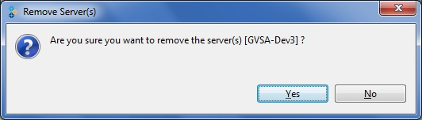
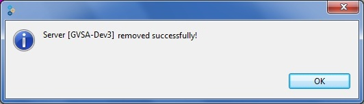
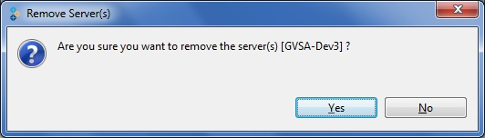
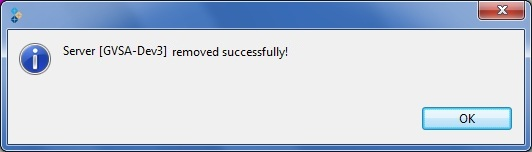

You can also choose multiple servers or select All from the Servers tab and select Remove Sever

You are asked to confirm before removing a server.


To remove a server, perform the following steps:
You can also choose multiple servers or select All from the Servers tab and select Remove Sever
You are asked to confirm before removing a server.

